标签：it |
在成功运行Wireshark之后，我们就可以进入下一步，更进一步了解这个强大的工具。
下面是一张地址为192.168.1.2的计算机正在访问“openmaniak.com”网站时的截图。
| 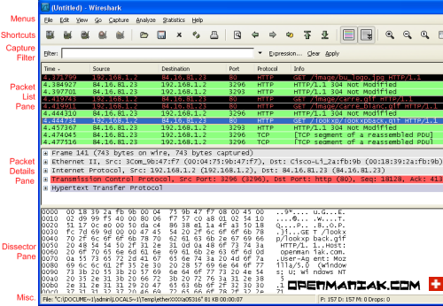 |
| 1. MENUS（菜单） 2. SHORTCUTS（快捷方式） 3. DISPLAY FILTER（显示过滤器） 4. PACKET LIST PANE（封包列表) | 5. PACKET DETAILS PANE（封包详细信息） 6. DISSECTOR PANE（16进制数据） 7. MISCELLANOUS（杂项） |
1. MENUS（菜单）
| 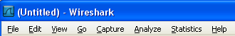 |
| - "File"（文件） - "Edit" （编辑） - "View"（查看） - "Go" （转到） - "Capture"（捕获） - "Analyze"（分析） - "Statistics" （统计） - "Help" （帮助） | 打开或保存捕获的信息。 查找或标记封包。进行全局设置。 设置Wireshark的视图。 跳转到捕获的数据。 设置捕捉过滤器并开始捕捉。 设置分析选项。 查看Wireshark的统计信息。 查看本地或者在线支持。 |
2. SHORTCUTS（快捷方式）
| 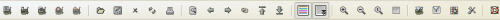 |
您可以将鼠标指针移动到某个图标上以获得其功能说明。
请不要将捕捉过滤器和显示过滤器的概念相混淆。请参考Wireshark过滤器中的详细内容。
返回页面顶部
| 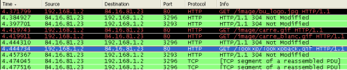 |
| 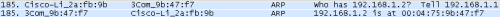 |
如果捕获的是一个OSI layer 2的封包，您在Source（来源）和Destination（目的地）列中看到的将是MAC地址，当然，此时Port（端口）列将会为空。
如果捕获的是一个OSI layer 3或者更高层的封包，您在Source（来源）和Destination（目的地）列中看到的将是IP地址。Port（端口）列仅会在这个封包属于第4或者更高层时才会显示。
您可以在这里添加/删除列或者改变各列的颜色：
Edit menu -> Preferences
5. PACKET DETAILS PANE（封包详细信息）
| 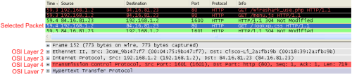 |
信息按照不同的OSI layer进行了分组，您可以展开每个项目查看。下面截图中展开的是HTTP信息。
| 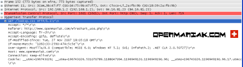 |
6. DISSECTOR PANE（16进制数据）
| 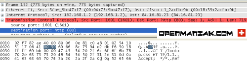 |
在上面的例子里，我们在“封包详细信息”中选择查看TCP端口（80），其对应的16进制数据将自动显示在下面的面板中（0050）。
| 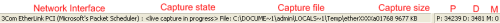 |
- - 正在进行捕捉的网络设备。
- 捕捉是否已经开始或已经停止。
- 捕捉结果的保存位置。
- 已捕捉的数据量。
- 已捕捉封包的数量。(P)
- 显示的封包数量。(D) (经过显示过滤器过滤后仍然显示的封包)
- 被标记的封包数量。(M)
正如您在Wireshark教程第一部分看到的一样，安装、运行Wireshark并开始分析网络是非常简单的。
使用Wireshark时最常见的问题，是当您使用默认设置时，会得到大量冗余信息，以至于很难找到自己需要的部分。
过犹不及。
这就是为什么过滤器会如此重要。它们可以帮助我们在庞杂的结果中迅速找到我们需要的信息。
| - - | 捕捉过滤器：用于决定将什么样的信息记录在捕捉结果中。需要在开始捕捉前设置。 显示过滤器：在捕捉结果中进行详细查找。他们可以在得到捕捉结果后随意修改。 |
两种过滤器的目的是不同的。
捕捉过滤器是数据经过的第一层过滤器，它用于控制捕捉数据的数量，以避免产生过大的日志文件。
显示过滤器是一种更为强大（复杂）的过滤器。它允许您在日志文件中迅速准确地找到所需要的记录。
两种过滤器使用的语法是完全不同的。我们将在接下来的几页中对它们进行介绍：
1. 捕捉过滤器
捕捉过滤器的语法与其它使用Lipcap（Linux）或者Winpcap（Windows）库开发的软件一样，比如著名的TCPdump。捕捉过滤器必须在开始捕捉前设置完毕，这一点跟显示过滤器是不同的。
设置捕捉过滤器的步骤是：
- 选择 capture -> options。
- 填写"capture filter"栏或者点击"capture filter"按钮为您的过滤器起一个名字并保存，以便在今后的捕捉中继续使用这个过滤器。
- 点击开始（Start）进行捕捉。
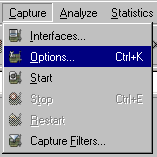
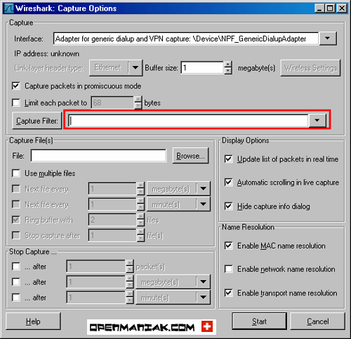
| 语法： | ||||||||||||
| 例子： |
可能的值: ether, fddi, ip, arp, rarp, decnet, lat, sca, moprc, mopdl, tcp and udp.
如果没有特别指明是什么协议，则默认使用所有支持的协议。
可能的值: src, dst, src and dst, src or dst
如果没有特别指明来源或目的地，则默认使用 "src or dst" 作为关键字。
例如，"host 10.2.2.2"与"src or dst host 10.2.2.2"是一样的。
可能的值： net, port, host, portrange.
如果没有指定此值，则默认使用"host"关键字。
例如，"src 10.1.1.1"与"src host 10.1.1.1"相同。
可能的值：not, and, or.
否("not")具有最高的优先级。或("or")和与("and")具有相同的优先级，运算时从左至右进行。
例如，
"not tcp port 3128 and tcp port 23"与"(not tcp port 3128) and tcp port 23"相同。
"not tcp port 3128 and tcp port 23"与"not (tcp port 3128 and tcp port 23)"不同。
例子：
| tcp dst port 3128 |
| ip src host 10.1.1.1 |
| host 10.1.2.3 |
| src portrange 2000-2500 |
| not imcp |
| src host 10.7.2.12 and not dst net 10.200.0.0/16 |
| (src host 10.4.1.12 or src net 10.6.0.0/16) and tcp dst portrange 200-10000 and dst net 10.0.0.0/8 |
注意事项：
当使用关键字作为值时，需使用反斜杠“\”。
"ether proto \ip" (与关键字"ip"相同).
这样写将会以IP协议作为目标。
"ip proto \icmp" (与关键字"icmp"相同).
这样写将会以ping工具常用的icmp作为目标。
可以在"ip"或"ether"后面使用"multicast"及"broadcast"关键字。
当您想排除广播请求时，"no broadcast"就会非常有用。
查看 TCPdump的主页以获得更详细的捕捉过滤器语法说明。
在Wiki Wireshark website上可以找到更多捕捉过滤器的例子。 2. 显示过滤器：
2. 显示过滤器：
通常经过捕捉过滤器过滤后的数据还是很复杂。此时您可以使用显示过滤器进行更加细致的查找。
它的功能比捕捉过滤器更为强大，而且在您想修改过滤器条件时，并不需要重新捕捉一次。
| 语法： | Protocol | . | . | operator | Operations | expression | ||||||||
您可以使用大量位于OSI模型第2至7层的协议。点击"Expression..."按钮后，您可以看到它们。
比如：IP，TCP，DNS，SSH
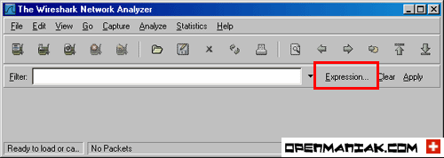
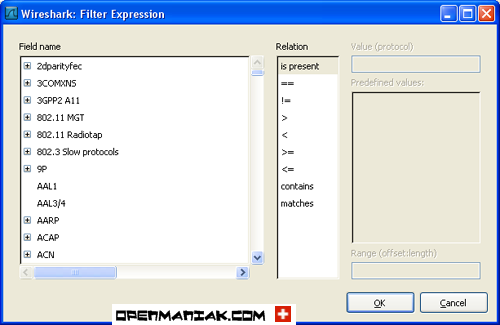
您同样可以在如下所示位置找到所支持的协议：
Wireshark的网站提供了对各种 协议以及它们子类的说明。
协议的子类。
点击相关父类旁的"+"号，然后选择其子类。
可以使用6种比较运算符：
| 英文写法： | C语言写法： | 含义： |
| 等于 | ||
| 不等于 | ||
| 大于 | ||
| 小于 | ||
| 大于等于 | ||
| 小于等于 |
| 英文写法： | C语言写法： | 含义： |
| 逻辑与 | ||
| 逻辑或 | ||
| 逻辑异或 | ||
| 逻辑非 |
让我们举个例子：
"tcp.dstport 80 xor tcp.dstport 1025"
只有当目的TCP端口为80或者来源于端口1025（但又不能同时满足这两点）时，这样的封包才会被显示。
例子：
| snmp || dns || icmp | 显示SNMP或DNS或ICMP封包。 |
| ip.addr == 10.1.1.1 |
| ip.src != 10.1.2.3 or ip.dst != 10.4.5.6 |
换句话说，显示的封包将会为：
来源IP：除了10.1.2.3以外任意；目的IP：任意
以及
来源IP：任意；目的IP：除了10.4.5.6以外任意
| ip.src != 10.1.2.3 and ip.dst != 10.4.5.6 |
换句话说，显示的封包将会为：
来源IP：除了10.1.2.3以外任意；同时须满足，目的IP：除了10.4.5.6以外任意
| tcp.port == 25 | 显示来源或目的TCP端口号为25的封包。 |
| tcp.dstport == 25 | 显示目的TCP端口号为25的封包。 |
| tcp.flags | 显示包含TCP标志的封包。 |
| tcp.flags.syn == 0x02 | 显示包含TCP SYN标志的封包。 |
| 表达式正确 | |
| 表达式错误 |